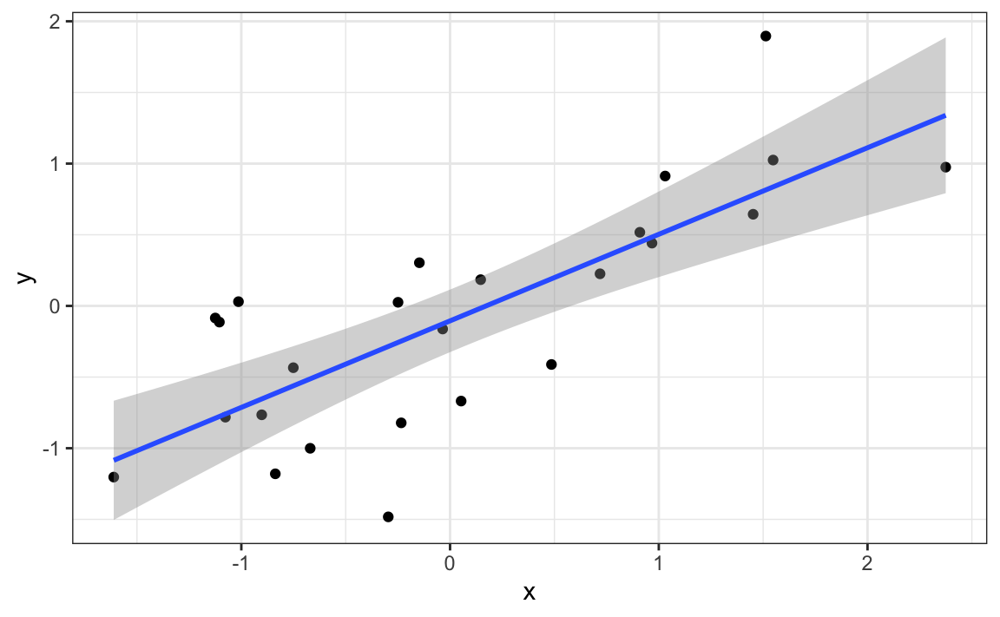
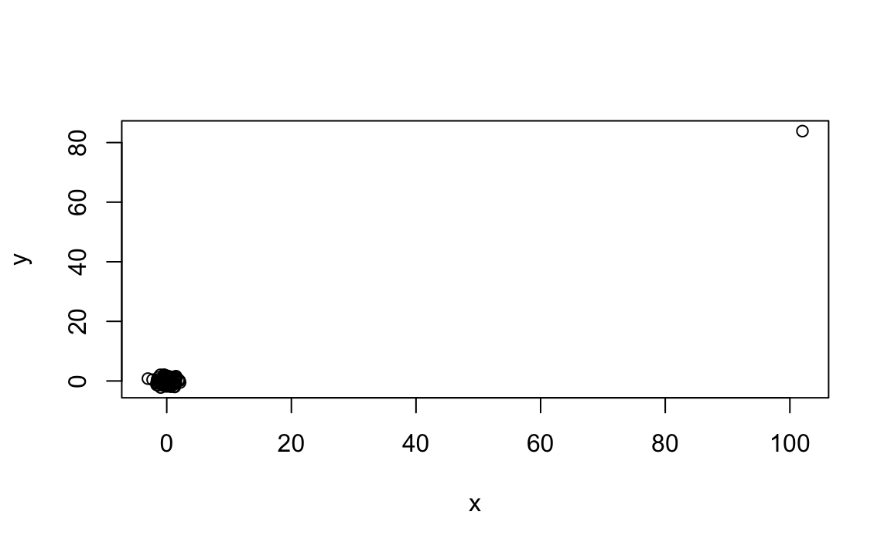

19 Association is not causation
Association is not causation is perhaps the most important lesson one can learn in a statistics class. Correlation is not causation is another way to say this. Throughout the statistics part of the book, we have described tools useful for quantifying associations between variables. However, we must be careful not to over-interpret these associations.
There are many reasons that a variable \(X\) can be correlated with a variable \(Y\), without having any direct effect on \(Y\). Below we examine four common ways that can lead to misinterpreting data.
19.1 Spurious correlation
The following comical example underscores the concept that correlation is not causation. It shows a very strong correlation between divorce rates and margarine consumption.
Does this mean that margarine causes divorces? Or do divorces cause people to eat more margarine? Of course. the answer to both these questions is no. This is just an example of what we call a spurious correlation.
You can see many more absurd examples on the Spurious Correlations website1.
The cases presented on the website are all instances of what is generally called data dredging, data fishing, or data snooping. It’s basically a form of what in the US they call cherry picking. An example of data dredging would be if you look through many results produced by a random process and pick the one that shows a relationship that supports a theory you want to defend.
A Monte Carlo simulation can be used to show how data dredging can result in finding high correlations among uncorrelated variables. We will save the results of our simulation into a tibble:
The first column denotes group. We created groups. For each group, we generated a pair of independent vectors, \(X\) and \(Y\), with 25 observations each, stored in the second and third columns. Because we constructed the simulation, we know that \(X\) and \(Y\) are not correlated.
Next, we compute the correlation between X and Y for each group and look at the max:
We see a maximum correlation of 0.7957485. If you just plot the data from the group achieving this correlation, it shows a convincing plot that \(X\) and \(Y\) are in fact correlated:
sim_data |> filter(group == res$group[which.max(res$r)]) |>
ggplot(aes(x, y)) +
geom_point() +
geom_smooth(method = "lm")
#> `geom_smooth()` using formula = 'y ~ x'
Remember that the correlation summary is a random variable. Here is the distribution generated by the Monte Carlo simulation:
res |> ggplot(aes(x=r)) + geom_histogram(binwidth = 0.1, color = "black")It’s simply a mathematical fact that if we observe random correlations that are expected to be 0, but have a standard error of 0.2039625, the largest one will be close to 1.
If we performed regression on this group and interpreted the p-value, we would incorrectly claim this was a statistically significant relation:
This particular form of data dredging is referred to as p-hacking. P-hacking is a topic of much discussion because it poses a problem in scientific publications. Since publishers tend to reward statistically significant results over negative results, there is an incentive to report significant results. In epidemiology and the social sciences, for example, researchers may look for associations between an adverse outcome and several exposures, and report only the one exposure that resulted in a small p-value. Furthermore, they might try fitting several different models to account for confounding and choose the one that yields the smallest p-value. In experimental disciplines, an experiment might be repeated more than once, yet only the results of the one experiment with a small p-value reported. This does not necessarily happen due to unethical behavior, but rather as a result of statistical ignorance or wishful thinking. In advanced statistics courses, you can learn methods to adjust for these multiple comparisons.
19.2 Outliers
Suppose we take measurements from two independent outcomes, \(X\) and \(Y\), and we standardize the measurements. However, imagine we make a mistake and forget to standardize entry 23. We can simulate such data using:
The data look like this:
qplot(x, y)
#> Warning: `qplot()` was deprecated in ggplot2 3.4.0.
Not surprisingly, the correlation is very high:
cor(x,y)
#> [1] 0.988But this is driven by the one outlier. If we remove this outlier, the correlation is greatly reduced to almost 0, which is what it should be:
cor(x[-23], y[-23])
#> [1] -0.0442There is an alternative to the sample correlation for estimating the population correlation that is robust to outliers. It is called Spearman correlation. The idea is simple: compute the correlation on the ranks of the values. Here is a plot of the ranks plotted against each other:
The outlier is no longer associated with a very large value, and the correlation decreases significantly:
Spearman correlation can also be calculated like this:
cor(x, y, method = "spearman")
#> [1] 0.00251There are also methods for robust fitting of linear models which you can learn about in, for instance, this book: Robust Statistics: Edition 2 by Peter J. Huber & Elvezio M. Ronchetti.
19.3 Reversing cause and effect
Another way association is confused with causation is when the cause and effect are reversed. An example of this is claiming that tutoring makes students perform worse because they test lower than peers that are not tutored. In this case, the tutoring is not causing the low test scores, but the other way around.
A form of this claim actually made it into an op-ed in the New York Times titled Parental Involvement Is Overrated2. Consider this quote from the article:
When we examined whether regular help with homework had a positive impact on children’s academic performance, we were quite startled by what we found. Regardless of a family’s social class, racial or ethnic background, or a child’s grade level, consistent homework help almost never improved test scores or grades… Even more surprising to us was that when parents regularly helped with homework, kids usually performed worse.
A very likely possibility is that the children needing regular parental help, receive this help because they don’t perform well in school.
We can easily construct an example of cause and effect reversal using the father and son height data. If we fit the model:
\[X_i = \beta_0 + \beta_1 y_i + \varepsilon_i, i=1, \dots, N\]
to the father and son height data, where \(X_i\) is the father height and \(y_i\) is the son height, we do get a statistically significant result. We use the galton_heights dataset defined in Chapter 14:
galton_heights |> summarize(tidy(lm(father ~ son)))
#> Warning: Returning more (or less) than 1 row per `summarise()` group was
#> deprecated in dplyr 1.1.0.
#> ℹ Please use `reframe()` instead.
#> ℹ When switching from `summarise()` to `reframe()`, remember that
#> `reframe()` always returns an ungrouped data frame and adjust
#> accordingly.
#> # A tibble: 2 × 5
#> term estimate std.error statistic p.value
#> <chr> <dbl> <dbl> <dbl> <dbl>
#> 1 (Intercept) 40.9 4.40 9.29 5.47e-17
#> 2 son 0.407 0.0636 6.40 1.36e- 9The model fits the data very well. If we examine the mathematical formulation of the model above, it could easily be misinterpreted so as to suggest that the son being tall caused the father to be tall. However, based on our understanding of genetics and biology, we know it’s the other way around. The model is technically correct. The estimates and p-values were obtained correctly as well. What is wrong here is the interpretation.
19.4 Confounders
Confounders are perhaps the most common reason that leads to associations begin misinterpreted.
If \(X\) and \(Y\) are correlated, we call \(Z\) a confounder if changes in \(Z\) cause changes in both \(X\) and \(Y\). Earlier, when studying baseball data, we saw how Home Runs were a confounder that resulted in a higher correlation than expected when studying the relationship between Bases on Balls and Runs. In some cases, we can use linear models to account for confounders. However, this is not always the case.
Incorrect interpretation due to confounders is ubiquitous in the lay press and they are often hard to detect. Here, we present a widely used example related to college admissions.
19.4.1 Example: UC Berkeley admissions
Admission data from six U.C. Berkeley majors, from 1973, showed that more men were being admitted than women: 44% men were admitted compared to 30% women. PJ Bickel, EA Hammel, and JW O’Connell. Science (1975). We can load the data and compute a statistical test, which clearly rejects the hypothesis that gender and admission are independent:
But closer inspection shows a paradoxical result. Here are the percent admissions by major:
admissions |> select(major, gender, admitted) |>
pivot_wider(names_from = "gender", values_from = "admitted") |>
mutate(women_minus_men = women - men)
#> # A tibble: 6 × 4
#> major men women women_minus_men
#> <chr> <dbl> <dbl> <dbl>
#> 1 A 62 82 20
#> 2 B 63 68 5
#> 3 C 37 34 -3
#> 4 D 33 35 2
#> 5 E 28 24 -4
#> # ℹ 1 more rowFour out of the six majors favor women. More importantly, all the differences are much smaller than the 14.2 difference that we see when examining the totals.
The paradox is that analyzing the totals suggests a dependence between admission and gender, but when the data is grouped by major, this dependence seems to disappear. What’s going on? This actually can happen if an uncounted confounder is driving most of the variability.
So let’s define three variables: \(X\) is 1 for men and 0 for women, \(Y\) is 1 for those admitted and 0 otherwise, and \(Z\) quantifies the selectivity of the major. A gender bias claim would be based on the fact that \(\mbox{Pr}(Y=1 | X = x)\) is higher for \(x=1\) than for \(x=0\). However, \(Z\) is an important confounder to consider. Clearly, \(Z\) is associated with \(Y\), as the more selective a major, the lower \(\mbox{Pr}(Y=1 | Z = z)\). But is major selectivity \(Z\) associated with gender \(X\)?
One way to see this is to plot the total percent admitted to a major versus the percent of women that made up the applicants:
admissions |>
group_by(major) |>
summarize(major_selectivity = sum(admitted * applicants)/sum(applicants),
percent_women_applicants = sum(applicants * (gender=="women")) /
sum(applicants) * 100) |>
ggplot(aes(major_selectivity, percent_women_applicants, label = major)) +
geom_text()
There seems to be association. The plot suggests that women were much more likely to apply to the two “hard” majors, indicating a confounding between gender and major’s selectivity. Compare, for example, major B and major E. Major E is much harder to enter than major B, and over 60% of applicants for major E were women, while less than 30% of the applicants for major B were women.
19.4.2 Confounding explained graphically
The following plot shows the number of applicants that were admitted and those that were not by major and gender:

It also breaks down the acceptances by major. This breakdown allows us to see that the majority of accepted men came from two majors, A and B. It also reveals that few women applied to these majors.
19.4.3 Average after stratifying
In this plot, we can see that if we condition or stratify by major, and then look at differences, we control for the confounder and this effect goes away:
admissions |>
ggplot(aes(major, admitted, col = gender, size = applicants)) +
geom_point()
Now we see that major by major, there is not much difference. The size of the dot represents the number of applicants, and explains the paradox: we see large red dots and small blue dots for the easiest majors, A and B.
If we average the difference by major, we find that the percent is actually 3.5% higher for women.
19.5 Simpson’s paradox
The case we have just covered is an example of Simpson’s paradox. It is called a paradox because we see the sign of the correlation flip when comparing the entire publication to specific strata. As an illustrative example, suppose you have three random variables \(X\), \(Y\), and \(Z\), and we observe realizations of these. Here is a plot of simulated observations for \(X\) and \(Y\) along with the sample correlation:

You can see that \(X\) and \(Y\) are negatively correlated. However, once we stratify by \(Z\) (shown in different colors below), another pattern emerges:

It is really \(Z\) that is negatively correlated with \(X\). If we stratify by \(Z\), the \(X\) and \(Y\) are actually positively correlated, as seen in the plot above.
19.6 Exercises
For the next set of exercises, we examine the data from a 2014 PNAS paper3 that analyzed success rates from funding agencies in the Netherlands and concluded:
Our results reveal gender bias favoring male applicants over female applicants in the prioritization of their “quality of researcher” (but not “quality of proposal”) evaluations and success rates, as well as in the language used in instructional and evaluation materials.
A response4 was published a few months later titled No evidence that gender contributes to personal research funding success in The Netherlands: A reaction to Van der Lee and Ellemers which concluded:
However, the overall gender effect borders on statistical significance, despite the large sample. Moreover, their conclusion could be a prime example of Simpson’s paradox; if a higher percentage of women apply for grants in more competitive scientific disciplines (i.e., with low application success rates for both men and women), then an analysis across all disciplines could incorrectly show “evidence” of gender inequality.
Who is correct here, the original paper or the response? Below, you will examine the data and come to your own conclusion.
1. The primary evidence for the conclusion of the original paper relies on a comparison of the percentages. Table S1 in the paper includes the information we need:
library(dslabs)
research_funding_ratesConstruct the two-by-two table used for the conclusion about differences in awards by gender.
2. Compute the difference in percentage from the two-by-two table.
3. In the previous exercise, we noticed that the success rate is lower for women. But is it significant? Compute a p-value using a Chi-square test.
4. We see that the p-value is about 0.05. So there appears to be some evidence of an association. But can we infer causation here? Is gender bias causing this observed difference? The response to the original paper claims that what we see here is similar to the UC Berkeley admissions example. Specifically, they state that this “could be a prime example of Simpson’s paradox; if a higher percentage of women apply for grants in more competitive scientific disciplines, then an analysis across all disciplines could incorrectly show ‘evidence’ of gender inequality.” To settle this dispute, create a dataset with number of applications, awards, and success rate for each gender. Re-order the disciplines by their overall success rate. Hint: use the reorder function to re-order the disciplines in a first step, then use pivot_longer, separate, and pivot_wider to create the desired table.
5. To check if this is a case of Simpson’s paradox, plot the success rates versus disciplines, which have been ordered by overall success, with colors to denote the genders and size to denote the number of applications.
6. We definitely do not see the same level of confounding as in the UC Berkeley example. It is hard to say that there is a clear confounder here. However, we do see that, based on the observed rates, some fields favor men and others favor women. We also see that the two fields with the largest difference favoring men are also the fields with the most applications. But, unlike the UC Berkeley example, women are not more likely to apply for the harder subjects. Is it possible some of the selection committees are biased and others are not?
To answer this question we start by checking if any of the differences seen above are statistically significant. Remember that even when there is no bias, we will see differences due to random variability in the review process as well as random variability across candidates. Perform a Chi-square test for each discipline. Hint: define a function that receives the total of a two-by-two table and returns a data frame with the p-value. Use the 0.5 correction. Then use the summarize function.
7. In the medical sciences, there appears to be a statistically significant difference, but could this be a spurious correlation? We performed 9 tests. Reporting only the one case with a p-value less than 0.05 might be considered an example of cherry picking. Repeat the exercise above, but instead of a p-value, compute a log odds ratio divided by their standard error. Then use qq-plot to see how much these log odds ratios deviate from the normal distribution we would expect: a standard normal distribution.